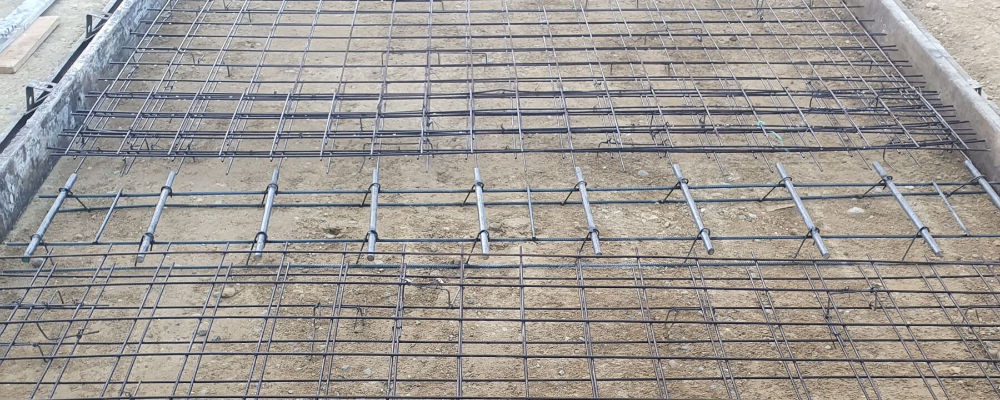
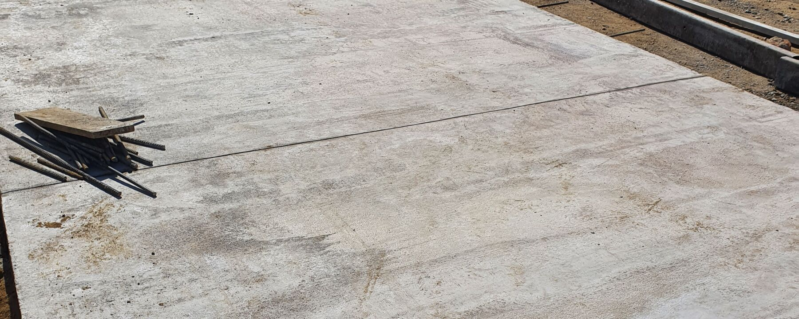

Controlamos calidad, costo y plazo de su obra y emitimos conceptos técnicos documentados que sirven de soporte en reclamaciones y procesos jurídicos.
Sin costo. Revisamos su caso y le orientamos sobre el control que necesita.
Un ingeniero de HINKO le contactará para coordinar la visita técnica.
Escribir por WhatsAppAcompañamos a propietarios, constructoras, copropiedades y entidades en todas las etapas del proyecto.
Control técnico, administrativo, financiero y contractual de la obra.
Verificación de procesos constructivos, materiales y especificaciones en sitio.
Informes documentados como soporte en reclamaciones, conciliaciones y procesos jurídicos.
Evaluación de fisuras, humedades, asentamientos y daños estructurales.
Revisión técnica para copropiedades que reciben de la constructora.
Estudios técnicos y de viabilidad para fundamentar el proyecto.
Presupuestos de obra, análisis de precios unitarios y revisión de ofertas.
Planeación, coordinación de contratistas y control de alcance, costo y plazo.
Recibo de zonas comunes, diagnóstico de daños y revisión de cotizaciones para consejos y administraciones.
Interventoría técnica y financiera para quien invierte en una obra y quiere un control independiente.
Interventoría y supervisión de contratos de obra civil, edificación e infraestructura vial.

Infraestructura vialExperiencia en obra civil y vial que respalda nuestro criterio técnico.
Nos integramos al proyecto en el momento en que nos necesite, de la planeación al cierre.
¿No encuentra su respuesta? Un ingeniero le responde por WhatsApp.
Preguntar por WhatsAppLa supervisión técnica verifica que la obra se construya según planos, especificaciones y normas. La interventoría es más amplia: además del control técnico incluye el seguimiento administrativo, financiero y contractual.
Elaboramos conceptos e informes técnicos documentados que pueden usarse como soporte en reclamaciones ante constructoras o aseguradoras y en procesos jurídicos. La estrategia legal la define su abogado.
Lo ideal es desde antes de iniciar la obra, para revisar presupuestos y contratos. Sin embargo, podemos vincularnos en cualquier etapa del proyecto.
Sí. Inspeccionamos técnicamente las zonas comunes y elaboramos un informe con hallazgos y pendientes para que la copropiedad los gestione con la constructora.
Depende del tipo de obra, su valor, duración y frecuencia de control requerida. Después de conocer el proyecto le enviamos una propuesta con el alcance y los honorarios.
Sí. Atendemos clientes públicos y privados en todo el país.